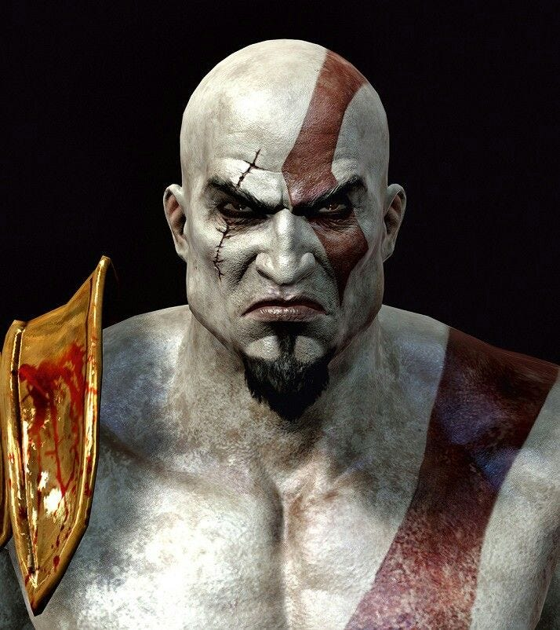

Kratos é o protagonista da série de jogos God of War. Conhecido como o Fantasma de Esparta, ele foi um grande guerreiro espartano que fez um pacto com o deus Ares para salvar sua vida. No entanto, acabou sendo manipulado e, tragicamente, causou a morte de sua própria família.